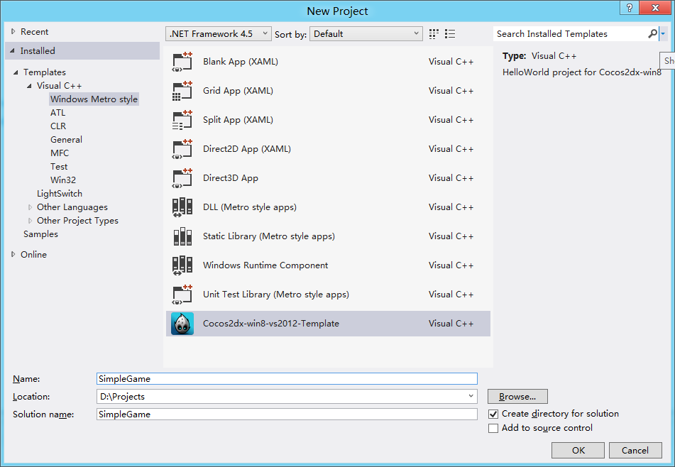
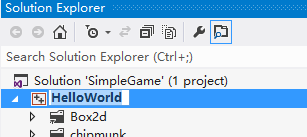

Before we started you should have read Create Project.
Here we only show the difference.

set PROJECT_NAME=SimpleGame
set COCOS2D_DIR=d:\cocos2dx-win8
set PROJECT_DIR=d:\Projects\SimpleGame
Select the project "Helloworld", press f12 to rename it to "SimpleGame"
